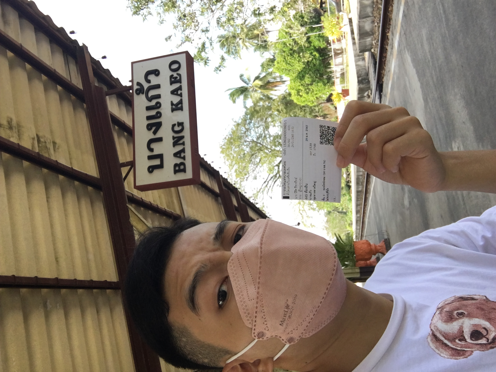
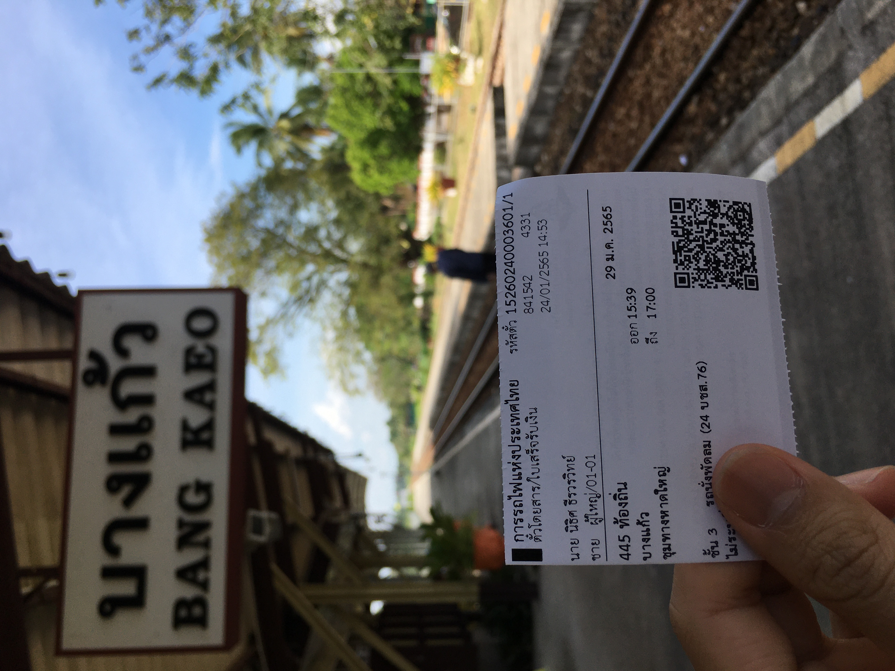
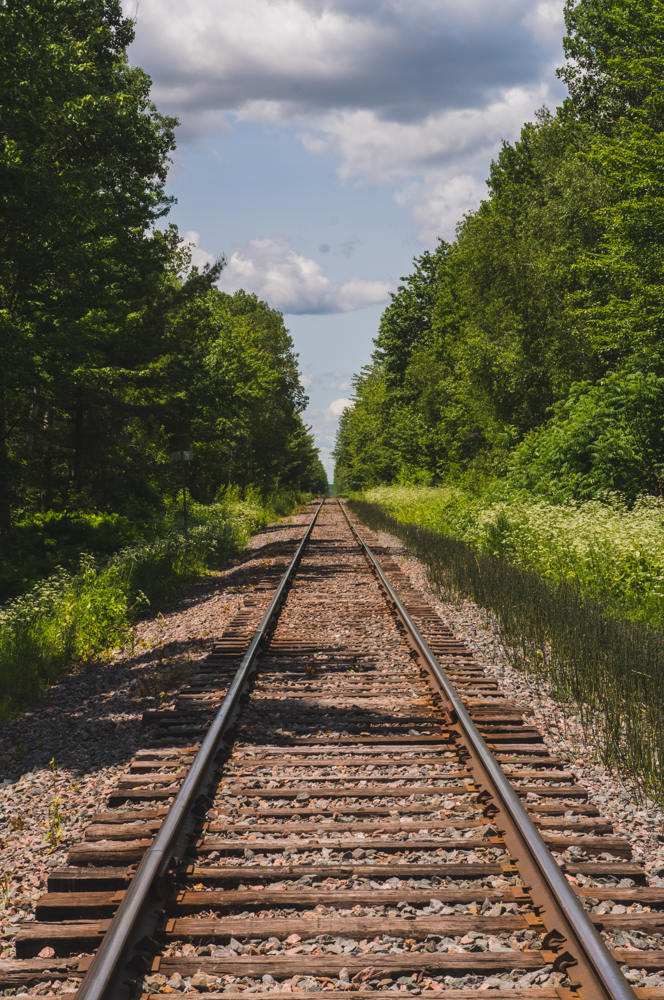
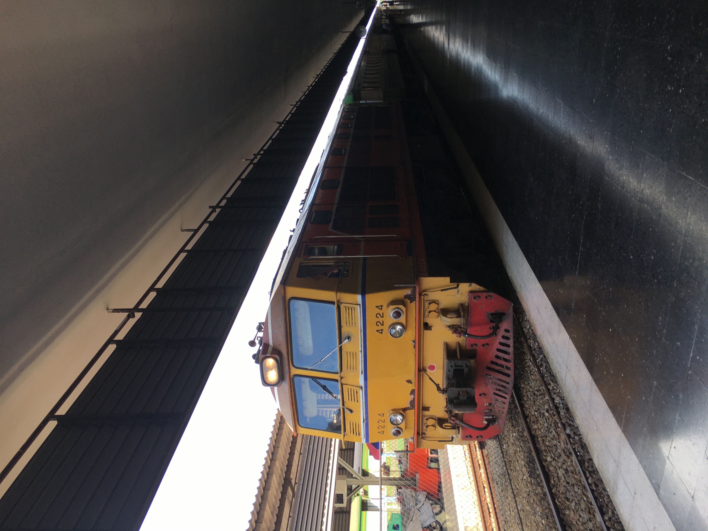

I arrived at Chiang Mai Railway Station at 3 p.m., around two hours before departure. The train crossed into towns with poorly-built houses and dilapidated buildings. I had heard from locals that the train didn't serve food on board because of Covid-19 restrictions, so I made my way to the local 7-11. I bought a ready-to-eat meal, chips, drinks, a pack of gum, a bottle of water, and some local desserts. Some of the food I got from the local 7-11. I usually have breakfast, dinner, and supper, and it turned out to be a huge mistake not to take along more substantial meals. The snacks didn't do much to quell my hunger. I ended up wishing I had bought some local food from the roadside hawkers to bring on board.
Passengers began boarding at around 4.30 p.m. Tourists occupied most of the first-class cabins, while local students took up many second-class seats. I only saw a handful of people in the third-class sections, which were the only passenger cars that were not air-conditioned. Throughout my week-long trip to Thailand, I only brought along a small carry-on and a foldable tote. For my week-long trip to Thailand, I only brought along a small carry-on and a foldable tote. Marielle Descalsota/Insider As I had never traveled on a rail train before, I was surprised at how much heat the vehicle emitted. It was uncomfortable for me to take photographs of the train's exterior, or even stand next to it.
I travel as light as I can during reporting trips, especially when I cover the backpacking beat, but other passengers brought along many of their belongings which they stowed in the train's luggage compartment. Nonetheless, my first impression of the train was positive — it was clean, it was quiet on board, and the temperature of the air-conditioning was just right.
Overall, I'd say taking a day train trip across Thailand would be better for me looking to catch a glimpse of the country's provinces and natural landscapes. I'm glad to have tried the one-day journey once but in hindsight, it's not a trip worth going out of my way for.